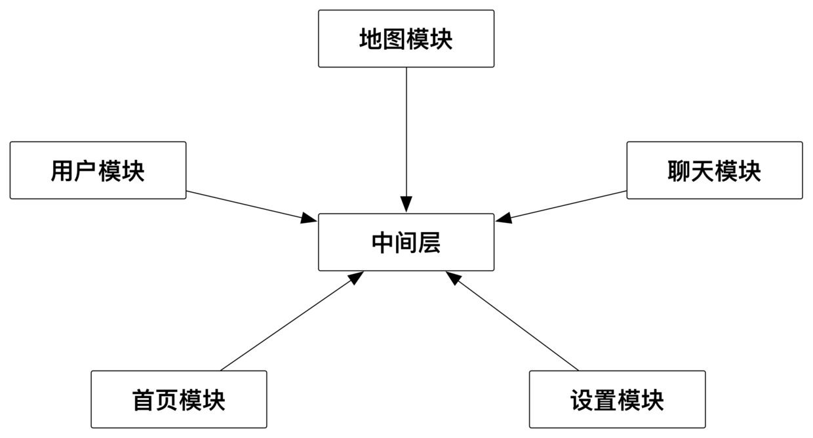

iOSProject 综合项目, iOS 基础各种
IOS综合项目,完善的框架,路由模块化设计,集成科大讯飞SDK方便iOS基本输入控件实现语音辅助输入，UI效果参照京东APP,JS与OC交互,ionic跨平台开发,MQTT 协议,即时通讯协议,视屏播放,跑马灯效果 仿美团地图定位,城市收索, 友盟分享,基础动画 增加FCUIID帮助类,引导页功能模块,照片上传 ,UIView自定义导航栏,文件下载,Masonry 案例,fmdb,数据库,sqlite,百度地图,二维码,照片上传,照片上传有进度,列表倒计时,H5和原生交互,自定义各种弹框,常见表单类型,人脸识别,列表加载图片,列表拖拽,日历操作,导航条渐变,核心动画,动画特效等等.
Swift综合性项目, Swift 基础各种
Swift综合性项目 Swift4.0+, MVVM模块化设计 新闻列表, 图片浏览, 图片上传, 自定义表情键盘, 各种自定义控件等等 更多新功能 后续会持续更新............
Swift4.0+ FMDB数据库封装
// 插入数据:
SqliteManager.sharedManager.insert()
// 查询数据:
SqliteManager.sharedManager.select()
// 修改数据:
SqliteManager.sharedManager.update()
// 删除数据:
SqliteManager.sharedManager.delete()
// 查询数据:
SqliteManager.sharedManager.selectIntoDic()
let result = SqliteManager.sharedManager.queryDicArrayForSql(sql: "SELECT * FROM T_PERSON")
print(result)............
iOS 完整可上线项目, 仿今日头条 视频播放 音频播放 仿百思 新闻浏览等等
完整可上线项目 包含新闻浏览, 仿今日头条视屏播放, 音频播放 ,没有导航栏,自定义导航栏,字体适配屏幕,空白页展示,空白页,导航条颜色渐变,导航条高度渐变,YYText 使用,列表的展开和收起等等............
状态栏 指示器框架 可pod install 'SUPStatusBarHUD'
@interface SUPStatusBarHUD : NSObject
* 显示普通信息
* @param msg 文字
* @param image 图片
+ (void)showMessage:(NSString *)msg image:(UIImage *)image;
* 显示普通信息:
+ (void)showMessage:(NSString *)msg;
* 显示成功信息:
+ (void)showSuccess:(NSString *)msg;
* 显示失败信息:
+ (void)showError:(NSString *)msg;
* 显示正在处理的信息:
+ (void)showLoading:(NSString *)msg;
* 隐藏:
+ (void)hide;
+ (void)showXXX;............
iOS 组件化开发, 项目框架设计, Objc + 中间件 + CocoaPods组件管理
iOS组件化开发,方便集成，项目需要哪个模块直接通过CocoaPods集成即可, 可以把每个组件当做一个独立的app，每个组件甚至可以采取不同的架构，例如分别使用MVVM、MVC等架构，根据自己的编程习惯做选择。
程序猿 🐵
一直在努力 从未停歇过........:
- 一个成功的创业者，三个因素，眼光、胸怀和实力
- 机会从不会“失掉”，你失掉了，自有别人会得到
- 认识自己的无知是认识世界的最可靠的方法
- 不想当将军的士兵不是好士兵，但是当不了好的将军的士兵,可能是一个好的程序员😁
- 一个一流的创意，三流的执行，我宁可喜欢一个一流的执行，三流的创意